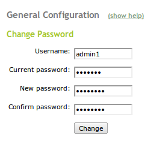

Procedures of Operation¶
Change Password¶
Note
This procedure applies to Zentyal 2.0 through 2.2, but not to 3.0.
First, go to menu item Office ‣ Users and Groups ‣ LDAP Settings. Remove the checkmark at Enable PAM, and click Change to save the setting. PAM settings are illustrated below.

Now go to Core ‣ System ‣ General. Enter the username and the current password, and then enter a new password and confirm the password. Click Change to complete the password change. The Change Password page is shown following.
Return to page Office ‣ Users and Groups ‣ LDAP Settings after the password is changed. Add a checkmark at Enable PAM, and click Change to save the setting.